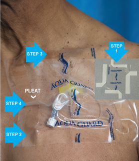

| Fold corners prior to putting on gloves (see inset photo). |
| Remove bottom strip and place adhesive on skin below catheter and lumens. |
| Remove top strip and place on skin above central line or port dressing, creating a "loose pocket." Do not apply flat and tight! |
| Remove side strip and create a "pleat" in the middle while placing adhesive on skin. Pinch the pleat then fold pleat side-to-side shile applying pressure to adhesive. Repeat for remaining side. |
| Massage adhesive border against skin to ensure waterproof seal. |